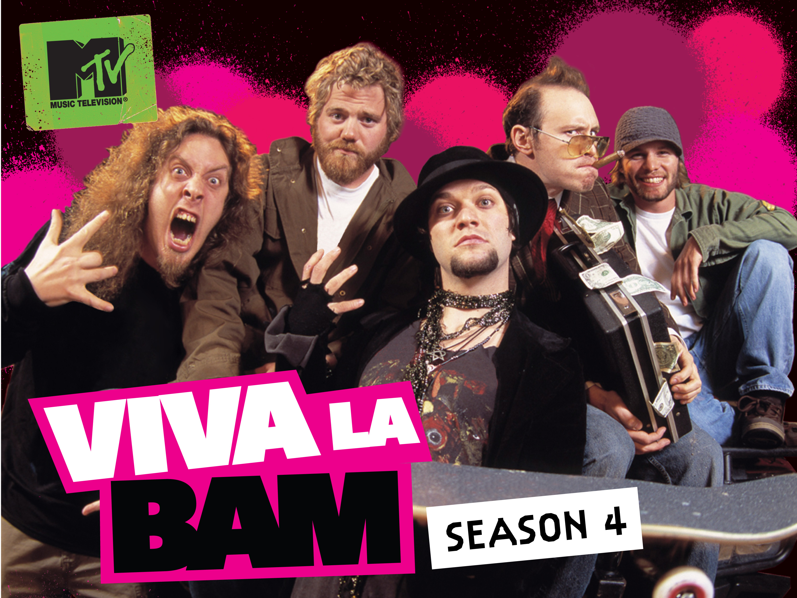
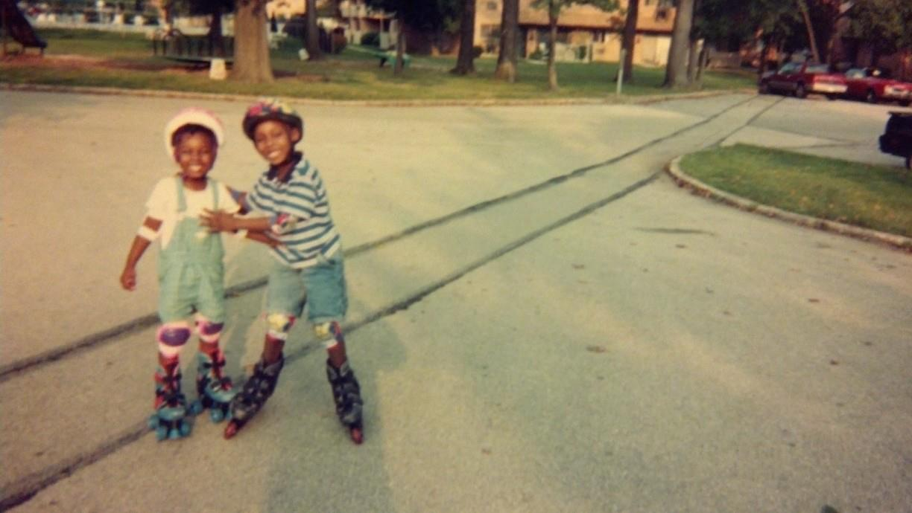

⠀⠀⠀⠀⠀⠀⠀⠀⠀⠀⠀⠀⠀⠀⠀⠀⠀⠀⠀⠀⠀⠀⠀⠀⠀⠀⠀⠀⠀⠐⠚⠃⠀⠀⠀⠀⠀⠀⠀⠀⠀⠀⠀⠀⠀⠀⠀⠀⠀⠀⠀⠀⠀⠀⠀⠀⠀⠀⠀⠀⠀⠀⠀⠀⠀⠀⠀⠀⠀⠀⠀⠀⠀⠀⠀⠀⠀⠀⠀⠀⠀⠀⠀⠀⠀⠀⠀⠀⠀⠀⠀⠀⠀⠀ ⠀⠀⠀⠀⠀⠀⠀⠀⠀⠀⠀⠀⠀⠀⠀⠀⠀⠀⠀⠀⠀⠀⠀⠀⠀⠀⠀⠀⠀⠀⠀⠀⠀⠀⠀⠀⠀⠀⠀⠀⠀⠀⠀⠀⠀⠀⠀⠀⠀⠀⠀⠀⠀⠀⠀⠀⠀⠀⠀⠀⠀⠀⠀⠀⠀⠀⠀⠀⠀⠀⠀⠀⠀⠀⠀⠀⠀⠀⠀⠀⠀⠀⠀⠀⠀⠀⠀⠀⠀⠀⠀⠀⠀⠀ ⠀⠀⠀⠀⠀⠀⠀⠀⠀⠀⠀⠀⠀⠀⠀⠀⠀⠀⠀⠀⠀⠀⠀⠀⠀⠀⠀⠀⠀⠀⠀⠀⠀⠀⠀⠀⠀⠀⠀⠀⠀⠀⠀⠀⠀⠀⠀⠀⠀⠀⠀⠀⠀⠀⠀⠀⠀⠀⠀⠀⠀⠀⠀⠀⠀⠀⠀⠀⠀⠀⠀⠀⠀⠀⠀⠀⠀⠀⠀⠀⠀⠀⠀⠀⠀⠀⠀⠀⠀⠀⠀⠀⠀⠀ ⠀⠀⠀⠀⠀⠀⠀⠀⠀⠀⠀⠀⠀⠀⠀⠒⠀⠀⠀⠀⠀⠀⠀⠀⠀⠀⠀⠀⠀⠀⠀⠀⠀⠀⠀⠀⠀⠀⠀⠀⠀⠀⠀⠀⠀⠀⠀⠀⠀⠀⠀⠀⠀⠀⠀⠀⠀⠀⠀⠀⠀⠀⠀⠀⠀⠀⠀⠀⠀⠀⠀⠀⠀⠀⠀⠀⠀⠀⠀⠀⠀⠀⠀⠀⠀⠀⠀⠀⠀⠀⠀⠀⠀⠀ ⠀⠀⠀⠀⠀⠀⠀⠀⠀⠀⠀⠀⠀⠀⠀⠀⠀⠀⠀⠀⠀⠀⠀⠀⠀⠀⠀⠀⠀⠀⠀⠀⠀⠀⠀⠀⠀⠀⠀⠀⠀⠀⠀⠀⠀⠀⠀⠀⠀⠀⠀⠀⠀⠀⠀⠀⠀⠀⠀⠀⠀⠀⠀⠀⠀⠀⠀⠀⠀⠀⠀⠀⠀⠀⠀⠀⠀⠀⠀⠀⠀⠀⠀⠀⠀⠀⠀⠀⠀⠀⠀⠀⠀⠀ ⠀⠀⠀⠀⠀⠀⠀⠀⠀⠀⠀⠀⠀⠀⠀⠀⠀⠀⠀⠀⠀⠀⠀⠀⠀⠀⠀⠀⠀⠀⠀⠀⠀⠀⠀⠀⠀⠀⠀⠀⠀⠀⠀⠀⠀⠀⠀⠀⠀⠀⠀⠀⠀⠀⠀⠀⠀⠀⠀⠀⠀⠀⠀⠀⠀⠀⠀⠀⠀⠀⠀⠀⠀⠀⠀⠀⠀⠀⠀⠀⠀⠀⠀⠀⠀⠀⠀⠀⠀⠀⠀⠀⠀⠀ ⠀⠀⠀⠀⠀⠀⠀⠀⠀⠀⠀⠀⠀⠀⠀⠀⠀⠀⠀⠀⠀⠀⠀⠀⠀⠀⠀⠀⠀⠀⠀⠀⠀⠀⠀⠀⠀⠀⠀⠀⠀⠀⠀⠀⠀⠀⠀⠀⠀⠀⠀⠀⠀⠀⠀⠀⠀⠀⠀⠀⠀⠀⠀⠀⠀⠀⠀⠀⠀⠀⠀⠀⠀⠀⠀⠀⠀⠀⠀⠀⠀⠀⠀⠀⠀⠀⠀⠀⠀⠀⠀⣀⣀⠀ ⠀⠀⠀⠀⠀⠀⠀⠀⠀⠀⠀⠀⠀⠀⠀⠀⠀⠀⠀⠀⠀⠀⠀⠀⠀⠀⠀⠀⠀⠀⠀⠀⠀⠀⠀⠀⠀⠀⠀⠀⠀⠀⠀⠀⠀⠀⠀⠀⠀⠀⠀⠀⠀⠀⠀⠀⠀⠀⠀⠀⠀⠀⠀⠀⠀⠀⠀⠀⠀⠀⠀⠀⠀⠀⠀⠀⠀⠀⠀⠀⠀⠀⠀⠀⠀⠀⠀⠀⣤⣶⡿⠛⢻⡿ ⠀⠀⠀⠀⠀⠀⠀⠀⠀⠀⠀⠀⠀⠀⠀⠀⠀⠀⠀⠀⠀⠀⠀⠀⠀⠀⠀⠀⠀⠀⠀⠀⠀⠀⠀⠀⠀⠀⠀⠀⠀⠀⠀⠀⠀⠀⠀⠀⠀⠀⠀⠀⠀⠀⠀⠀⠀⠀⠀⠀⠀⠀⠀⠀⠀⠀⠀⠀⠀⠀⠀⠀⠀⠀⠀⠀⠀⠀⠀⠀⠀⠀⠀⠀⠀⠀⠀⣼⡿⡏⠁⠀⠀⠁ ⠀⠀⠀⠀⠀⠀⠀⠀⠀⠀⠀⠀⠀⠀⠀⠀⠀⠀⠀⠀⠀⠀⠀⠀⠀⠀⠀⠀⠀⠀⠀⠀⠀⠀⡀⠀⠀⠀⠀⠀⠀⠀⠀⠀⠀⠀⢀⣀⣀⣀⣀⣀⣠⣀⢀⣀⠀⠀⠀⠀⠀⠀⠀⠀⠀⠀⠀⠀⠀⠀⠀⠀⠀⠀⠀⠀⠀⠀⠀⠀⠀⠀⠀⠀⠀⠀⠀⣿⠁⡇⠀⠀⠀⣰ ⠀⠀⠀⠀⠀⠀⠀⠀⠀⠀⠀⠀⠀⠀⠀⠀⠀⠀⠀⠀⠀⠀⠀⠀⠀⠀⠀⠀⣀⣠⣶⣶⣾⡿⠿⠿⠿⠿⠿⣷⣦⣶⣾⡿⠿⠿⠿⠿⠟⠛⠛⠿⠿⠿⠿⠿⢿⣿⣿⣶⣦⣤⣀⡀⠀⠀⠀⠀⠀⠀⠀⠀⠀⠀⠀⠀⠀⠀⠀⠀⠀⠀⠀⠀⠀⠀⠀⣿⠀⠁⠀⠀⢸⣿ ⠀⠀⠀⠀⠀⠀⠄⠀⠀⠀⠀⠀⠀⠀⠀⠀⠀⠀⠀⠀⠀⠀⠀⠀⠀⣠⣴⣿⡿⠟⠋⠉⠀⠀⠀⠀⣤⡾⠟⠛⠉⠁⠀⠀⠀⠀⠀⠀⠀⠀⠀⠀⠀⠀⠀⠀⠀⠀⠈⠉⠙⠛⠿⢿⣷⣶⣤⣀⠀⠀⠀⠀⠀⠀⠀⠀⠀⠀⠀⠀⠀⠀⠀⠀⠀⠀⠀⢹⡆⠀⠀⠀⠀⠉ ⠀⠀⠀⠀⠀⠀⢙⡆⠀⠀⠀⠀⠀⠀⠀⠀⠀⠀⠀⠀⠀⠀⢀⣴⣾⡿⠟⠉⠀⠀⠀⠀⠀⠀⠀⠀⠀⠀⠀⠀⠀⠀⠀⠀⠀⠀⠀⠀⠀⠀⠀⠀⠀⠀⠀⠀⠀⠀⠀⠀⠀⠀⠀⠀⠀⠉⠻⠿⣷⣶⣦⡄⠀⠀⠀⠀⠀⠀⠀⠀⠀⠀⠀⠀⠀⠀⠀⠘⣿⠀⠀⠀⠀⠀ ⠀⠀⠀⠀⠀⠀⠉⠀⠀⠀⠀⠀⠀⠀⠀⠀⠀⢀⣤⠖⣠⣶⡿⠛⠉⠀⠀⠀⠀⠀⠀⠀⠀⠀⠀⠀⠀⠀⠀⠀⠀⠀⠀⠀⠀⠀⠀⠀⠀⠀⠀⠀⠀⠀⠀⠀⠀⠀⠀⠀⠀⠀⠀⠀⠀⠀⠀⠀⠀⠉⠻⣿⣦⣀⣀⠀⠀⠀⠀⠀⠀⠀⠀⠀⠀⠀⠀⠀⣿⣦⣤⣀⣠⣴ ⠀⠀⠀⠀⠀⠀⠀⠀⠀⠀⠀⠀⠀⢀⣠⣴⣞⣿⠿⠛⠛⠁⠀⠀⠀⠀⠀⠀⠀⠀⠀⠀⠀⠀⠀⠀⠀⠀⠀⠀⠀⠀⠀⠀⠀⠀⠀⠀⠀⠀⠀⠀⠀⠀⠀⠀⠀⠀⠀⠀⠀⠀⠀⠀⠀⠀⠀⠀⠀⠀⠀⠀⠙⢿⣿⣿⣷⣶⣤⣀⠀⠀⠀⠀⠀⠀⠀⠀⠀⠙⠉⠉⠀⠀ ⠀⠀⠀⠀⠀⠀⠀⠀⢀⣀⣤⣴⣾⣿⣿⠟⠋⠀⠀⠀⠀⠀⠀⠀⠀⠀⠀⠀⠀⠀⠀⠀⠀⠀⠀⠀⠀⠀⠀⠀⠀⠀⠀⠀⠀⠀⠀⠀⠀⠀⠀⠀⠀⠀⠀⠀⠀⠀⠀⠀⠀⠀⠀⠀⠀⠀⠀⠀⠀⠀⠀⠀⠀⠀⠙⢷⡄⠉⠛⢿⣷⣦⡀⠀⠀⠀⠀⠀⠀⠀⠀⠀⠀⠀ ⠿⣿⣿⣿⣶⣿⣿⣿⣿⣿⠿⠟⠛⠉⠀⠀⠀⠀⠀⠀⠀⠀⠀⠀⠀⠀⠀⣠⡾⠓⠀⠀⠀⠀⠀⠀⠀⠀⠀⠀⠀⠀⠀⠀⠀⠀⠀⠀⠀⠀⠀⠀⠀⠀⠀⠀⠀⠀⠀⠀⠀⠀⠀⠀⠀⠀⠀⠀⠀⠀⠀⠀⠀⠀⠀⠀⠉⠀⠀⠀⠉⢻⣿⣶⡄⠀⠀⠀⠀⠀⠀⠀⠀⠀ ⠀⠁⠀⠀⠀⠀⠀⠀⠀⠀⠀⠀⠀⠀⠀⠀⠀⠀⠀⠀⠀⠀⠀⠀⠀⣠⣿⡟⠁⠀⠀⠀⠀⠀⠀⠀⠀⠀⠀⠀⠀⠀⠀⠀⠀⠀⠀⠀⠀⠀⠀⠀⠀⠀⠀⠀⠀⠀⠀⠀⠀⠀⠀⠀⠀⠀⠀⠀⠀⠀⠀⠀⠀⠀⠀⠀⠀⠀⠀⠀⠀⠀⠘⢿⣿⡄⠀⠀⠀⠀⠀⠀⠀⠀ ⠀⠀⠀⠀⠀⠀⠀⠀⠀⠀⠀⠀⠀⠀⠀⠀⠀⠀⠀⠀⠀⠀⠀⠀⣴⣿⠏⠀⠀⠀⠀⠀⣠⣴⣶⣄⠀⠀⠀⠀⠀⠀⠀⠀⠀⠀⠀⠀⠀⠀⠀⠀⠀⠀⠀⠀⠀⠀⠀⠀⠀⠀⠀⠀⠀⠀⠀⠀⠀⠀⠀⠀⠀⠀⠀⠀⠀⠀⠀⠀⠀⠀⠀⠈⢻⣿⣦⠀⠀⠀⠀⠀⠀⠀ ⠀⠀⠀⠀⠀⠀⠀⠀⠀⠀⠀⠀⠀⠀⠀⠀⠀⠀⠀⠀⠀⠀⠀⣼⣿⠃⠀⠀⠀⠀⢀⣾⣿⣿⣿⣿⡇⠀⠀⠀⠀⠀⠀⠀⠀⠀⠀⠀⠀⠀⠀⠀⠀⠀⠀⠀⠀⠀⠀⠀⠀⠀⠀⠀⠀⠀⠀⠀⠀⠀⠀⠀⠀⠀⠀⠀⣦⡀⠀⠀⠀⠀⠀⠀⠀⠻⣿⣧⡀⠀⠀⠀⠀⠀ ⠀⠀⠀⠀⠀⠀⠀⠀⠀⠀⠀⠀⠀⠀⠀⠀⠀⠀⠀⠀⠀⠀⢰⣿⡇⠀⠀⠀⠀⠀⣾⣿⣿⣿⣿⣿⡇⠀⠀⠀⠀⠀⠀⠀⠀⠀⠀⠀⠀⠀⠀⠀⠀⠀⠀⠀⠀⠀⠀⠀⠀⠀⠀⠀⠀⠀⠀⠀⠀⠀⠀⠀⠀⠀⠀⠀⠘⣷⡀⠀⠀⠀⠀⠀⠀⠀⠙⣿⣧⠀⠀⠀⠀⠀ ⠀⠀⠀⠀⠀⠀⠀⠀⠀⠀⠀⠀⠀⠀⠀⠀⠀⠀⠀⠀⠀⠄⣸⣿⣁⡀⠀⠀⠀⠀⣿⣿⣿⣿⣿⡟⠀⠀⠀⠀⠀⠀⠀⠀⠀⠀⠀⠀⠀⠀⠀⠀⠀⠀⠀⠀⠀⠀⠀⠀⠀⠀⠀⠀⠀⣠⣤⣤⣤⠀⠀⠀⠀⠀⠀⠀⠀⠸⣷⡀⠀⠀⠀⠀⠀⠀⠀⢹⢿⣶⠀⠀⠀⠀ ⠀⠀⠀⠀⠀⠀⠀⠀⠀⠀⠀⠀⠀⠀⠀⠀⠀⠀⠀⠀⠀⠀⣿⣿⠈⠻⣦⡴⠞⠳⣮⠛⠿⠟⠉⠀⠀⠀⠀⠀⠀⠀⠀⠀⠀⠀⠀⠀⠀⠀⠀⠀⠀⠀⠀⠀⣀⣀⡀⠀⠀⠀⠀⠀⣾⣿⣿⣿⣿⣷⠀⠀⠀⠀⠀⠀⠀⠀⢿⣧⠀⠀⠀⠀⠀⠀⠀⠘⢿⣿⣷⣄⠀⠀ ⠀⠀⠀⠀⠀⠀⠀⠀⠀⠀⠀⠀⠀⠀⠀⠀⠀⠀⠀⠀⣀⣴⢿⣿⣇⠀⠀⠀⠀⠠⢸⡇⠀⠀⠀⠀⠀⠀⠀⠀⠀⠀⠀⣤⠀⠀⢀⡀⠀⠀⠀⠀⠀⢀⣴⣿⡿⡟⠿⣷⡄⠀⠀⢰⣿⣿⣿⣿⣿⣿⠀⠀⠀⠀⠀⠀⠀⠀⢸⣿⠀⠀⠀⠀⠀⠀⠀⠀⠀⠙⢿⣝⣷⡄ ⠀⠀⠀⠀⠀⠀⠀⠀⠀⠀⠀⠀⠀⠀⠀⠀⠀⣠⣴⡾⠟⠁⠀⢻⣿⣦⡤⠤⠴⠶⠛⠁⠀⠀⠀⠀⠀⠀⠀⠀⠀⠀⠀⠻⠿⠿⠛⠻⣷⣦⣀⣠⡆⣾⡟⢠⣿⣿⠀⠻⣧⣤⣤⣼⣿⣿⣿⣿⣿⡿⠀⠀⠀⠀⠀⠀⠀⠀⠘⣿⠀⠀⠀⠀⠀⠀⠀⠀⠀⠀⠀⠈⠻⢧ ⠀⠀⠀⠀⠀⠀⠀⠀⠀⠀⠀⠀⣀⣠⣤⣶⠿⠟⠉⠀⠀⠀⠀⠀⠻⣿⣷⣄⡀⠀⠀⠀⠀⠀⠀⠀⠀⠀⠀⠀⠀⠀⠀⠀⠀⠀⠀⠀⠀⠉⠉⠉⢀⣼⠇⠀⠈⠉⠀⠀⠈⠀⠈⠉⠛⠻⣿⣿⡟⠁⠀⠀⠀⠀⠀⠀⠀⣀⣤⣿⣶⡶⠿⠶⠂⠀⠀⠀⠀⠀⠀⠀⠀⠀ ⠀⠀⠀⠀⠀⢀⣀⣠⣤⣶⣾⣿⠿⠛⠋⠁⠀⠀⠀⠀⠀⠀⠀⠀⠀⠀⠙⠿⣿⣶⣤⣀⠀⠀⠀⠀⠀⠀⠀⠀⠀⠀⠀⠀⠀⠀⠀⠀⠀⠀⢀⣴⡿⠋⠀⠀⠀⠀⠀⠀⠀⠀⠀⠀⠀⠀⠀⠙⢿⣆⢀⣀⣀⡀⣀⣴⣿⡿⠟⠋⠁⠀⠀⠀⠀⠀⠀⠀⠀⠀⠀⠀⠀⠀ ⣶⣶⣾⣿⡿⠿⠿⠟⠛⠉⠁⠀⠀⠀⠀⠀⠀⠀⠀⠀⠀⠀⠀⠀⠀⠀⠀⢀⡀⠉⢻⡿⠿⣶⣤⣤⣄⣀⣀⣀⠀⠀⠀⠀⠀⢀⣀⣀⣀⣀⣾⡟⠁⣾⣿⣷⠀⠀⠀⠀⠀⠀⠀⠀⠀⠀⠀⠀⠈⠻⠋⠉⠛⣿⣿⠋⠁⠀⠀⠀⠀⠀⠀⠀⠀⠀⠀⠀⠀⠀⠀⠀⠀⠀ ⠉⠀⠀⠀⠀⠀⠀⠀⠀⠀⠀⠀⠀⠀⠀⠀⠀⠀⠀⠀⠀⠀⢀⣠⣴⣾⡿⠿⠟⠛⠿⠿⢶⣦⣄⡉⠙⠛⣿⣿⠙⠛⢿⡶⠿⠿⠻⠟⠿⠿⠿⣿⣿⣿⣟⠋⠀⢀⣀⣀⠀⠀⠀⠀⠀⠀⠀⠀⠀⠀⣶⣶⡄⠙⣿⡇⠀⠀⠀⠀⠀⠀⠀⠀⠀⠀⠀⠀⠀⠀⠀⠀⠀⠀ ⠀⠀⠀⠀⠀⠀⠀⠀⠀⠀⠀⠀⠀⠀⠀⠀⠀⠀⠀⠀⢀⣾⣿⠿⠋⠁⠀⠀⠀⠀⠀⠀⠀⠈⠙⢿⣆⣴⣿⠏⠀⠀⠀⠀⠀⠀⠀⠀⠀⠀⠀⠀⠈⢻⣿⣧⣤⣼⣿⣿⡇⠀⠀⠀⢀⣠⡀⠀⠀⠀⠛⠿⠃⣰⣿⠇⠀⠀⠀⠀⠀⠀⠀⠀⠀⠀⠀⠀⠀⠀⠀⠀⠀⠀ ⠀⠀⠀⠀⠀⠀⠀⠀⠀⠀⠀⠀⠀⠀⠀⠀⠀⠀⠀⣴⣿⡿⠁⠀⠀⠀⠀⠀⠀⠀⠀⠀⠀⠀⠀⣰⣿⡿⠁⠀⠀⠀⠀⠀⠀⠀⠀⠀⠀⠀⠀⢀⣴⣿⣿⠃⠀⠀⢻⣶⣶⣶⣶⣴⣿⣿⣿⠀⠀⠀⣴⣼⡿⠟⠁⠀⠀⠀⠀⠀⠀⠀⠀⠀⠀⠀⠀⠀⠀⠀⠀⠀⠀⠀ ⠀⠀⠀⠀⠀⠀⠀⠀⠀⠀⠀⠀⠀⠀⠀⠀⠀⠀⣰⣿⡏⠀⠀⠀⠀⣰⡆⠀⠀⠀⠀⠀⠀⢀⣾⣿⠋⠀⠀⠀⠀⠀⠀⠀⢤⣤⣀⣀⣤⣴⣾⣿⠟⠛⣿⡄⣀⣠⣼⣿⡏⠀⠀⠈⠙⠻⣦⠀⠀⣰⣿⣧⠀⠀⠀⠀⠀⠀⠀⠀⠀⠀⠀⠀⠀⠀⠀⠀⠀⠀⠀⠀⠀⠀ ⠀⠀⠀⠀⠀⠀⠀⠀⠀⠀⠀⠀⠀⠀⠀⠀⠀⢀⣹⡟⠀⠀⠀⠀⢠⣿⡇⠀⠀⠀⠀⠀⢀⣾⣿⠉⠀⠀⠀⠀⠀⠀⠀⠀⠀⣠⣿⣿⣿⡏⣿⡇⢸⣇⣬⣿⡟⠉⠙⣿⣧⠀⠀⠀⠀⠀⠙⣷⣾⡿⠃⠹⣧⡀⠀⠀⠀⠀⠀⠀⠀⠀⠀⠀⠀⠀⠀⠀⠀⠀⠀⠀⣀⣾ ⠀⠀⠀⠀⠀⠀⠀⠀⠀⠀⠀⠀⠀⠀⠀⠀⠀⢸⣿⡇⠀⠀⠀⠀⠈⣿⣷⣠⣾⣷⣤⣄⣸⣿⠃⠀⠀⠀⠀⠀⠀⠀⠀⠀⠀⠿⣧⣿⠏⠀⠹⠿⣿⣿⣅⠘⣿⣄⣠⣿⣿⣧⣀⠀⠀⣀⣾⡟⣁⣀⣀⠀⠙⢿⣶⣄⡀⠀⠀⠀⠀⠀⠀⠀⠀⠀⠀⣀⣀⣠⣴⣾⡿⠟ ⠀⠀⠀⠀⠀⠀⠀⠀⠀⠀⠀⠀⠀⠀⠀⠀⠀⠘⣿⣧⠀⠀⠀⠀⠀⠈⣿⣿⡿⠍⠙⠻⣿⣿⡀⠀⠀⠀⠀⠀⠀⠀⠀⠀⠀⢠⣿⠇⠀⠀⠀⠘⣿⣤⡿⠀⠘⢿⡿⠋⠈⠻⣿⡿⠿⣿⣿⣿⠿⠿⢿⣿⣆⠀⠈⠙⠻⠿⣿⣶⣶⣶⣶⣶⣾⣿⣿⡿⠿⠟⠋⠉⠀⠀ ⠀⠀⠀⠀⠀⠀⠀⠀⠀⠀⠀⠀⠀⠀⠀⠀⠀⠀⠹⣿⣧⠀⠀⠀⠀⠀⣿⣿⠀⠀⠀⠀⢸⣿⡿⠀⠀⠀⠀⠀⠀⠀⠀⠀⢠⣿⠃⠀⠀⠀⣴⡿⣶⠛⠀⠀⠀⠀⢰⡆⠀⠀⣿⡇⣰⡿⠋⠀⠀⠀⠀⢻⣿⡆⠀⠀⠀⠀⠀⠀⠀⠀⠀⠀⠀⠀⠀⠀⠀⠀⠀⠀⠀⠀ ⠀⠀⠀⠀⠀⠀⠀⠀⠀⠀⠀⠀⠀⠀⠀⠀⠀⠀⠀⢿⣿⣷⣄⠀⠀⠀⣿⣿⠀⠀⠀⠀⠀⠛⠃⠀⠀⠀⠀⠀⠀⠀⠀⠀⣾⡏⠀⠀⡀⠠⣿⣿⠿⠀⠀⠀⠀⠀⣼⣿⣤⣦⣿⡇⠈⠀⠀⠀⠀⠀⠀⢸⣿⡁⠀⠀⠀⠀⠀⠀⠀⠀⠀⠀⠀⠀⠀⠀⠀⠀⠀⠀⠀⠀ ⠀⠀⠀⠀⠀⠀⠀⠀⠀⠀⠀⠀⠀⠀⠀⠀⠀⠀⠀⠀⠀⠙⠿⣿⣶⣦⣿⣿⣧⣤⡀⠀⠀⠀⠀⠀⠀⠀⠀⠀⠀⠀⠀⢀⣿⠇⠠⣼⣷⣦⣀⡀⠀⠀⠀⠀⠀⣸⣿⠇⠙⠛⠋⠀⠀⠀⠀⠀⠀⠀⠀⣼⣿⡇⠀⠀⠀⠀⠀⠀⠀⠀⠀⠀⠀⠀⠀⠀⠀⠀⠀⠀⠀⠀ ⠀⠀⠀⠀⠀⠀⠀⠀⠀⠀⠀⠀⠀⠀⠀⠀⠀⠀⠀⠀⠀⠀⠀⠀⠀⠉⠉⣿⣿⡀⠀⠀⠀⠀⠀⠀⠀⢀⡾⠀⠀⠀⠀⠀⢿⣦⡿⠋⠈⠙⠛⠛⣿⡄⠀⠀⢰⣿⠃⠀⠀⠀⠀⠀⠀⠀⠀⠀⠀⠀⢠⣿⣿⠅⠀⠀⠀⠀⠀⠀⠀⠀⠀⠀⠀⠀⠀⠀⠀⠀⠀⠀⠀⠀ ⠀⠀⠀⠀⠀⠀⠀⠀⠀⠀⢲⡄⠀⠀⠀⠀⠀⠀⠀⠀⠀⣤⣤⣤⣤⣤⣤⣬⣿⣿⣄⠀⠀⠀⠀⠀⣠⣾⣷⣶⣶⣶⣤⣤⣤⣀⣀⣄⣀⣀⣀⣀⣹⣷⣄⣴⣿⣏⣤⣤⣤⣤⣾⣶⣿⣄⣀⣀⣤⣠⣾⡿⠁⠀⠀⠀⠀⠀⠀⠀⠀⠀⠀⠀⠀⠀⠀⠀⠀⠀⠀⠀⠀ ⠀⠀⠀⠀⠀⠀⢠⣀⠀⡄⠀⠀⢀⣰⠀⠀⠀⠀⠀⠀⠀⠀⠀⠀⠀⠀⠀⠀⠉⠙⠛⠿⢶⣶⠶⠿⠿⠿⠿⠿⠿⠿⠿⠿⠿⠿⠟⠻⠿⠿⠿⠿⠿⠿⠿⢿⣿⠿⠿⠿⠛⠛⠛⠛⠛⠛⠛⠛⠛⠛⠛⠒⠒⠂⠀⠀⠀⠀⠀⠀⠀⠀⠀⠀⠀⠀⠀⠀⠀⠀⠀⠀⠀⠀ ⠀⠀⠀⠀⠀⠀⢠⡿⠻⡅⠀⠘⠺⣧⡀⠀⠀⠀⠀⠀⠀⠀⠀⠀⠀⠀⠀⠀⠀⠀⠀⠀⠀⠀⠀⠀⠀⠀⠀⠀⠀⠀⠀⠀⠀⠀⠀⠀⠀⠀⠀⠀⠀⠀⠀⠀⠀⠀⠀⠀⠀⠀⠀⠀⠀⠀⠀⠀⠀⠀⠀⠀⠀⠀⠀⠀⠀⠀⠀⠀⠀⠀⠀⠀⠀⠀⠀⠀⠀⠀⠀⠀⠀⠀ ⠀⠀⠀⠀⠀⠀⠹⠶⠶⣧⢠⡥⠷⠾⠃⠀⠀⠀⠀⠀⠀⠀⠀⠀⠀⠀⠀⠀⠀⠀⠀⠀⠀⠀⠀⠀⠀⠀⠀⠀⠀⠀⠀⠀⠀⠀⠀⠀⠀⠀⠀⠀⠀⠀⠀⠀⠀⠀⠀⠀⠀⠀⠀⠀⠀⠀⠀⠀⠀⠀⠀⠀⠀⠀⠀⠀⠀⠀⠀⠀⠀⠀⠀⠀⠀⠀⠀⠀⠀⠀⠀⠀⠀⠀ ⠀⠀⠀⠀⠀⠀⠀⠀⠀⠹⠞⠁⠀⠀⠀⠀⠀⠀⠀⠀⠀⠀⠀⠀⠀⠀⠀⠀⠀⠀⠀⠀⠀⠀⠀⠀⠀⠀⠀⠀⠀⠀⠀⠀⠀⠀⠀⠀⠀⠀⠀⠀⠀⠀⠀⠀⠀⠀⠀⠀⠀⠀⠀⠀⠀⠀⠀⠀⠀⠀⠀⠀⠀⠀⠀⠀⠀⠀⠀⠀⠀⠀⠀⠀⠀⠀⠀⠀⠀⠀⠀⠀⠀⠀
I was born in Doha, Qatar. Doha is known for being the headquarters of Al Jazeera News, and not much else! Me and my older brother were both born here. My parents were part of the "Brain Drain" of Sudan in the 90's. When Omar Al-Bashir's ethnofascist regime started, any progressive minded person who had any ability to leave, left. My dad was a Marxist, so we were very much GONE.

When I was 9 months old, my family moved to the United States. I became a naturalized U.S. citizen when I was 12 years old. Unfortunately I do not have dual citizenship, so I'm stuck here. Hooray! It's cool, though. There's been war and infighting in Sudan for the entire 28 years that I've been alive anyway. I'm not missing much. I have family who has been tortured by the government there, most notably a diabetic third cousin who was falsely imprisoned, starved, tortured, and deprived of his insulin. Not missing much, for real!
After immigrating to the U.S. as political refugees, we landed in Phoenixville, PA and then spent a short time in Westchester, PA; home of Bam Margera (though I didn't know he was from there until very recently).
Viva la Bam was one of my favorite TV shows growing up, and fundamentally altered my brain chemistry (for the worse). My parents both worked constantly to support our extended family in Sudan, and unfortunately they had a pretty toxic and violent relationship. I spent most of my time as a kid trying to ignore all the screaming, and the police got involved, which resulted in the end of my dad's career.
My family moved to Chicago when I was 3. I begged them let me to go to school, so they lied about my age and I started kindergarten at 5.
I got bullied a LOT. For being a geek, for being "too quiet," for being darkskinned, for being African, and especially for being Muslim (although I no longer identify with Islam). If you know anything about American history circa 2003-2011, you'll know that any Muslim or brown-looking person during that time ran the risk of being labeled a terrorist, or much worse. It was quite possibly the most popular joke of the era, although not as bad as being sent to Abu Ghraib. That was something we heard a lot at school, so I really leaned on my big brother to be my only friend. The first (and last) fight I got into was defending him from 5th grader bullies when I was in 2nd grade. They dislocated my shoulder, and I quickly found out that violence is actually not the answer! We protected each other pretty well, until puberty happened and the misogyny brainrot began. We were divided, and conquered. Sigh.
I was going to Walt Disney Magnet School from 1st to 3rd grade, and I was lucky enough to have very sophisticated computer, music, science, and art classes there. Most of the teachers in those classes were Black, which gave me clear role models who looked like me and supported me to pursue my interests. My home life was really difficult, so I leaned on my teachers to be the trusted adults in my life. They saw me as a precocious kid who was desperate for someone to care about me, and I was lucky enough that a lot of them did. NOT ALL, but enough that being at school was my favorite time of the day. At school I was safe, fed (thank you CPS free meal program), and as long as I did the work I wouldn't be screamed at or beaten. It was my sanctuary.
My mom worked day and night to get certified to practice medicine in the U.S. She was a doctor in Sudan, but she had to start all over, cleaning bedpans as a CNA despite all of her training. Once she completed her residency, she divorced my dad.
I lived with my mom and older brother, and we went through a lot after my parents split up. We were homeless for a summer and lived with other Sudanese people who were unemployed and living on welfare. I spent that summer taking care of 7 other kids while being so sad that I couldn't see my father. We would all watch Supernanny and I took mental notes to learn how to manage the little ones who were getting on my nerves. In Sudan, kids are basically left to roam the village, only expected to be home for supper. In America, they have the same parenting style, and the expected us to raise ourselves. It was so hard taking care of a stranger's kids when I was only 8 myself, but my brother and I were the oldest and taking care of children was considered "women's work." So while he played video games, I learned how to be a mother: to others and to myself.
After that summer, we moved to Jefferson Park and I was the only Black kid in my class for the first time in my life. It was hard, but almost every one of my classmates was a first generation immigrant. Although most of them were Eastern European and Central/South American, we all could relate to each other much more than we could to culturally American kids. We made mySpace accounts to chat with one another, and since I wasn't allowed to go out and play with them, I found a new home in internet communities. No matter what was going on at home, I could log on to mySpace, edit my profile, and learn about art and music. I started playing Runescape, which led me to my favorite MMORPG of all time: Maplestory. I logged HOURS of that game, had a guild, made friends all over the world, and even got my dad to buy me a $5 DLC card from BestBuy. That DLC went sooo far in those times. My clothes were all my brother's hand-me-downs in real life, but online I was swagged out. I found out I really liked customizing my characters and fashion dress up games. I could play The Sims for hours, just inventing people and completely defying the laws of nature in the process. I spent less time actually playing the game than in Creator mode.
My brother and I were latchkey kids. We were left unsupervised for hours with unrestricted video game and computer access. We weren't allowed to go outside much because my parents were terrified of the American traditions of kidnapping and child trafficking. If you were on the internet in the early 2000's, you know that it was the Wild Wild West. Anyone could post anything, pretty much anywhere. We were elementary school kids on Ebaumsworld and Something Awful. IT WAS BAD!
Eventually, we moved to Naperville and I had to deal with racial bullying for the first time. I had been bullied for my ethnicity, but this was the first time I experienced real racial predjudice and a school administration that enabled it. Probably because they felt the same way. My expereinces there radicalized me, and forced me to face the reality of racism and systemic injustice at the ripe age of 14. My mother took my side for the first time, as we had a common enemy: the people of Naperville. I put my head down and once again focused on school. I earned a full scholarship to go to UIC, and I actually got into their graduate program for Bioengineering as a freshman. My parents both wanted me to follow in her footsteps to be a doctor and after many tears shed, she pressured me to drop out of the program. I started a pre-med Biology major feeling pretty down about the whole situation.
In school, I had no support from my family. My parents were paying for my older brother's education out of pocket, and they refused to front the bill for my semesterly $2000 in fees. I wasn't eligible for work study because my brother already had it, and I had a full ride already. I worked part time as a bike messenger while school was in session, and I did full time work over the summers, but it wasn't enough. Eventually my grades slipped below the 3.5 GPA I needed to keep my scholarship, and things got pretty bad pretty fast. I wasn't doing well emotionally so my advisor basically forced me to see a campus counselor and taking antidepressants. I lost my scholarship, and my mom flat out refused to help me pay for school or co-sign for a loan, so to everyone's shock and surprise, I dropped out. After a semester out of school, my mom finally agreed to help me pay. But I had a boyfriend, which was a huge no-no for an orthodox Muslim girl. Once she found out, she kicked me out of the house and disowned me. We haven't had much of a relationship since then, for obvious reasons.
I did a whole laundry list of jobs to support myself once I was alone. In a way, even though I never broke above the poverty line, I was the happiest I had ever felt in my life. I was finally free to be my own person, and do what I liked. After seeing an ad for it posted on UIC's campus, I sent a cover letter asking to work at Harriet de Wit's human behavioral pharmacology lab at the University of Chicago. She responded, and I got the job as a lab intern. I enjoyed being there but I experienced a lot of classism and microaggressions from folks there. My mental health once again took a turn and I had a small menty B which resulted in me leaving the lab, and giving up on a future in academia. However, while I was at the lab, I noticed that a lot of the software we were using was written in code. At one point, we were testing experimental software that was basically made in Python. I thought it was so cool that there was an application for computer science in a Psychology lab. In my free time, I took codecademy Python classes. Although I forgot most of it, I rushed to finish my daily data entry tasks so I could learn more. I loved it.
After a few years of being on my own, and working a bunch of completely unrelated jobs in the service industry, I decided that I wanted to find a way to get into computer science. I was exhausted by the fakery of the service industry, and so tired of being on my feet for hours without food or water. At this point, I knew that I wanted to be an entrepeneur and work for myself. So I searched for a program that would help me get into a tech career, and build a safety net for myself to be able to pursue whatever I want and figure out what my purpose truly is. Eventually I found i.c.stars, and the rest is history.
From all the madness of this journey, there are a few things I learned that have gotten me through it. I'd like to share them with you: